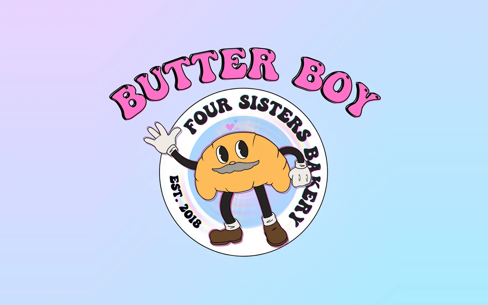
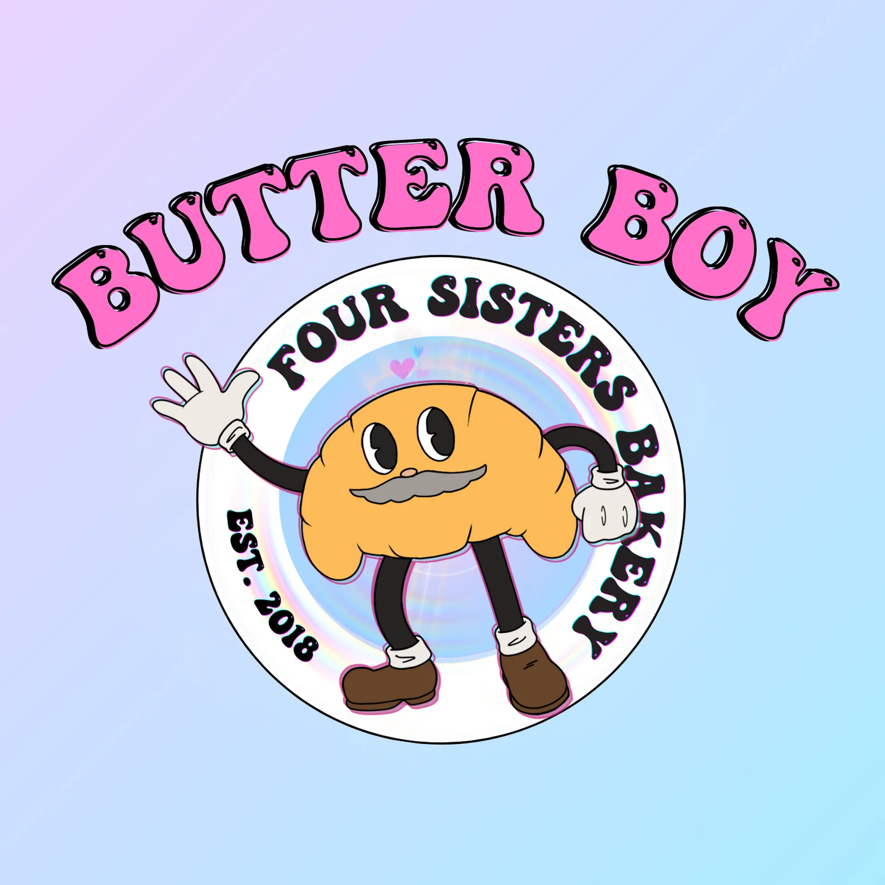
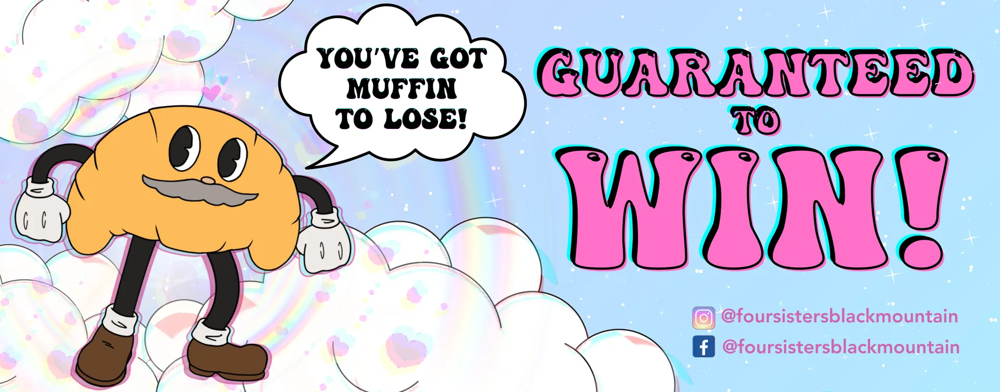
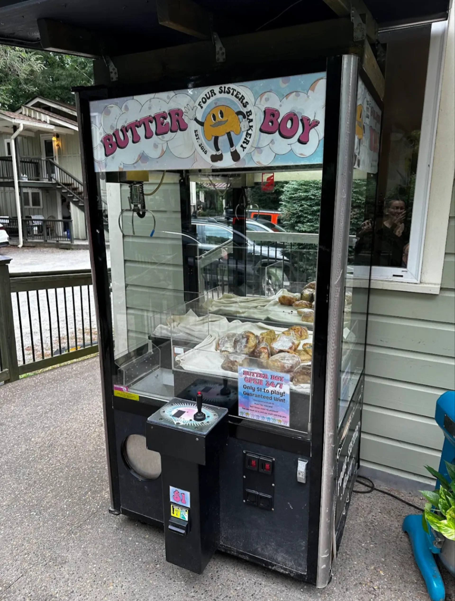
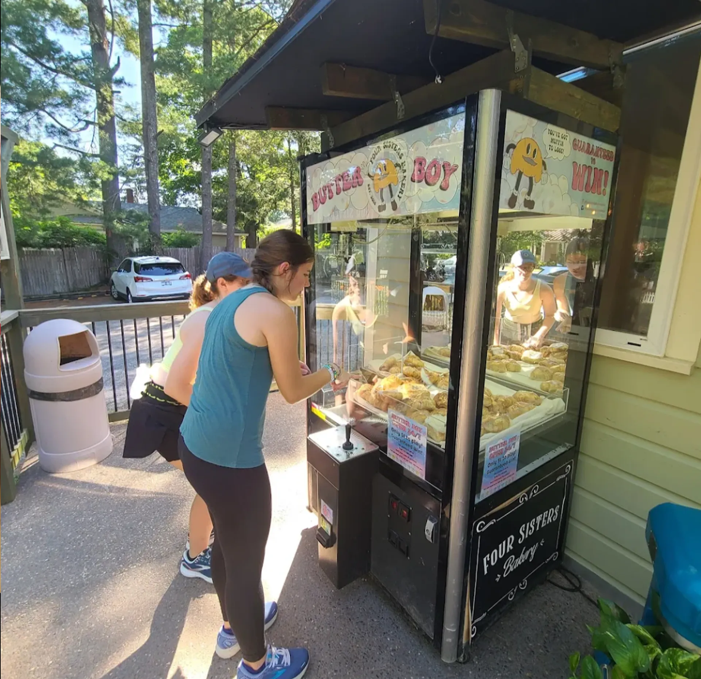

Butter Boy
Insert Coin for Chaos
Character Branding · Environmental Graphics · Infographic Design · Community Marketing
A mascot with a cult following in the making. Butter Boy began as a quirky character sketch, part croissant, part claw machine hype man, and evolved into a fully developed brand identity designed to transform how Four Sisters Bakery sold day-old pastries. Inspired by retro claw machines, Cuphead-style animation, and chromatic aberration, I created the full character branding, environmental graphics, and signage. The result was an immersive, unforgettable in-store experience that boosted customer engagement, strengthened brand visibility, and cleverly redirected attention to fresh pastries, all while turning a practical sales issue into a community-building moment.

Overview
Butter Boy is a whimsical marketing project developed for Four Sisters Bakery in Black Mountain, North Carolina. I collaborated with the bakery team to transform a common sales challenge, overselling discounted day-old pastries, into a novel, community-focused marketing experience using a claw machine and a custom character brand.
Discovery & Concept Development
The idea was born from the bakery's front-end team, led by my spouse, who proposed recontextualizing the sale of day-old pastries through play and nostalgia. Inspired by classic claw machine culture, we created a full character-driven concept that would create an additional barrier between customers and discounted pastries while simultaneously attracting attention, engagement, and foot traffic.
Character & World Building
Working from an initial illustration of "Butter Boy", a charming, vintage croissant-man character drawn by a team member, I expanded the concept into a full visual world:
- Developed a chromatic pastel color palette inspired by early Disney and vaporwave styles
- Designed an immersive claw machine background and environment for Butter Boy
- Referenced traditional arcade aesthetics to align placement, signage, and interaction flow
- Crafted supporting infographic materials explaining game rules, pricing, and bakery policies in a cohesive style
Execution & Impact
Butter Boy now lives inside the claw machine at Four Sisters Bakery, welcoming customers to "win" their day-old pastries through a playful, memorable experience. This project not only boosted community engagement and social media visibility but also redirected customer attention back toward purchasing fresh pastries while adding a quirky, beloved fixture to the local culture of Black Mountain.
Gallery



